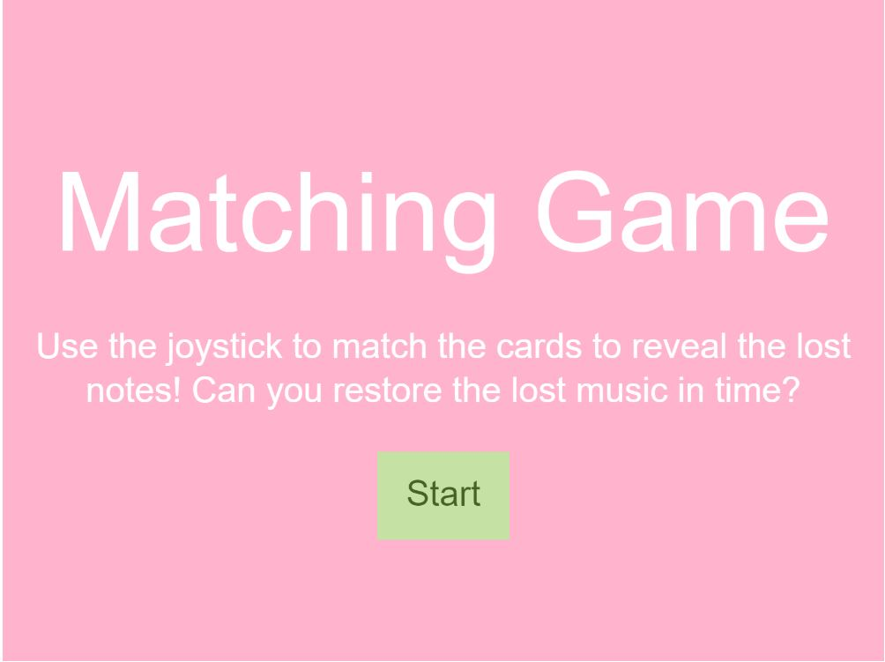
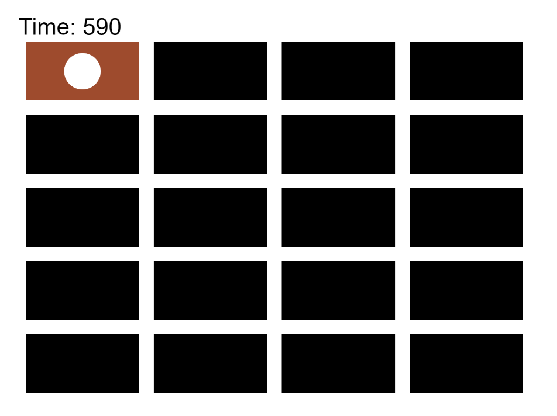
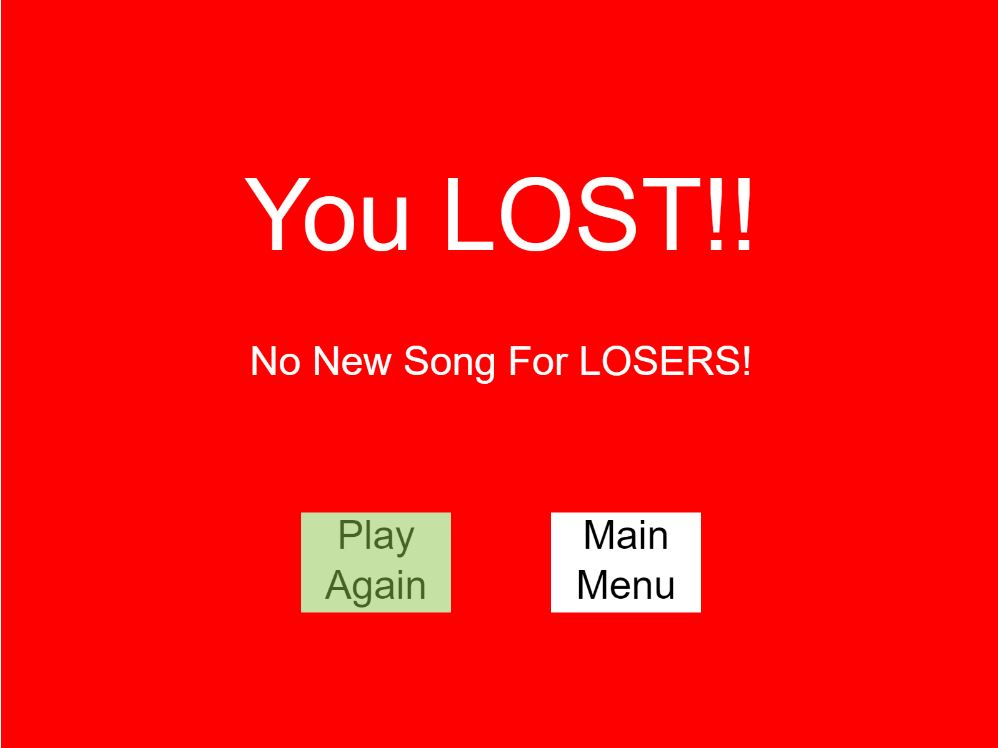
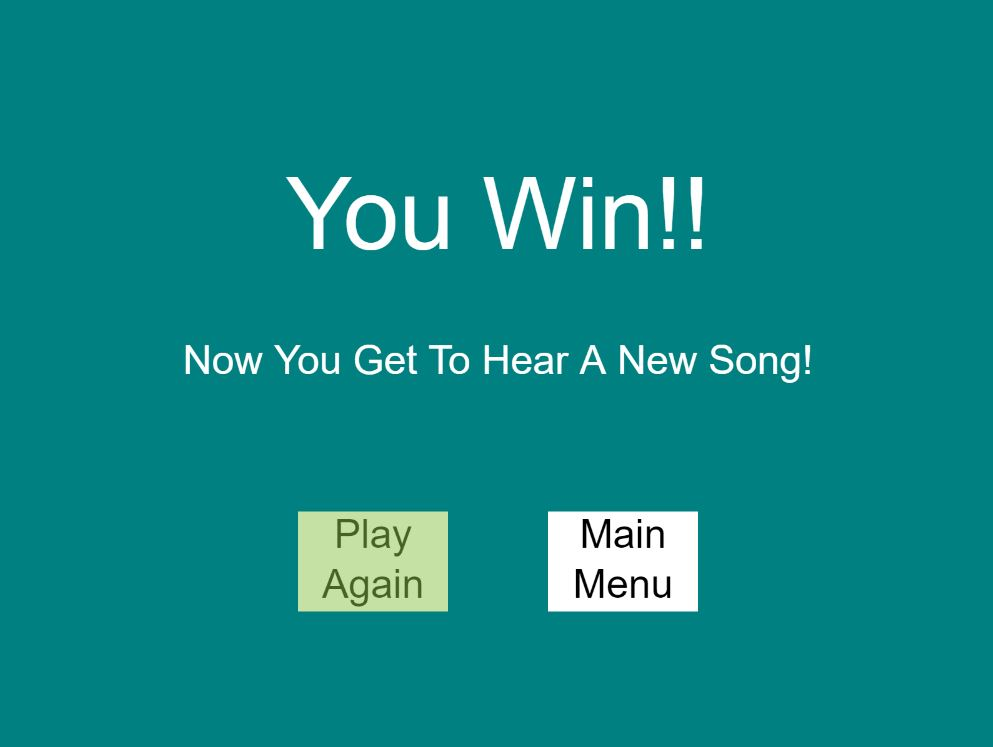

Documentation
Motivation
I started this project to recreate the very first project I ever created when I first learned to code, but this time better. I wanted to create a matching game where the music corresponds to the cards that are revealed. So the game starts with there being no sounds, but as more and more cards are matched, the music starts to build up.
Graphic Section
I created a start screen, a game screen, a win screen, and a lost screen. These screen are easily navigated by buttons that are controlled with the joystick/keyboard. There are 10 different cards, while my code does automatically draw the board based on set values of cards (in this case 10). Each card has a matching card, so there is always an even number of cards. There can be multiple different sets of cards being displayed, so the user is able to quickly cycle through the cards, without them immediately disappearing.
Sound Section
The idea of my game was to match different cards to reveal different aspects of a song. The game starts with there being no sounds, but as more and more cards are matched, the music starts to build up. In the case of my current implementation, I've decided that each color of card corresponds to a few specific notes in an entire music work as a whole. On the journey of trying to make a matching game where music plays an important role, I got a side tracked and learned to read sheet music. This allowed me to recreate one of my favorite songs "False God" by Taylor Swift by using Parts in Tone.JS. There are 27 measures that I coded. This part plays if the player is able to match all the cards within the time frame. While ideally I would have continued the song that you "find" in the matching game, to meet the requirements of this project I decided to play a different song.
Physical Section
The game can be played with the use of the arrow keys and space bar or the Arduino joystick. The use of the space bar directly corresponds to the use of pressing down on the joystick. There is a rgb LED light that will light up to the corresponding color of the most recent card match you've made.
Improvemenets
I was very proud of this project! However, there are a few things that I would change if I were to continue development.
- I would optimize the joystick movements because at the current stage joystick use is a little bit clunky. I could do more research into the standard ways a joystick is implemented. It should be more easy to slide around the board, without the curser flying all around the place.
- I would change the way that the cursor moves around the board, currently a few of the edges if you go past them it will stay locked, but other edges will go to the other side of the board. I would like to have a more consistent behavior surrounding the boarders.
- I would add pictures or some kind of representation of what each card is changing, because revealing different colored cards doesn't clearly communicate the musical aspect of the game very clearly.
- I would make the colors of the cards more align with the colors that are displayed by the LED light, since some colors (like brown) don't translate very well to the LED light. Mostly, for stylistic cohesion!
- I would also add a way for the matching game to be reset or restarted. The code for this would be quite simple because there are already functions created that reset the board, but I would have to figure out a simple way for user interactions to have call these functions. I couldn't come up with a solution to this problem.
Pictures Of The Game
Start Screen
Game Board
Lose Screen
Win Screen
Video
Here is the video of my friend playing the matching game
(NOTE: It was fun watching someone else play something that I made)